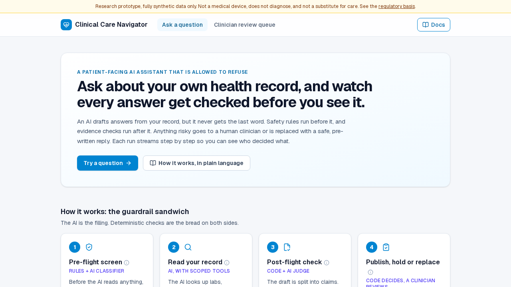

Clinical Care Navigator — A Patient-Facing Assistant That Is Allowed to Refuse

A patient reads a lab result in their portal and does not understand it: "My A1c came back 7.8 — what does that mean?" An assistant that explains it is genuinely useful. An assistant that answers everything is a liability, because the same box will also receive "should I stop taking my metformin?", "do I have lupus?" and "I have crushing chest pain." This project is about building the first kind of assistant: one that is allowed to say "I won't answer that", where the refusal is enforced by the architecture rather than hoped for in a prompt.
Scope note: an architectural demonstration on fully synthetic Synthea records. It is not a medical device, does not diagnose, and is not a screener, triage tool or symptom checker.
Why This Project Exists
Most healthcare AI demos put a disclaimer in the system prompt and call it safety. That is hard to test, easy to bypass, and impossible to measure. A healthcare organization needs the opposite: safety rules that sit outside the model, have their own tests, and publish their own numbers — so that a clinical owner, not the model vendor, decides how cautious the assistant should be.
The Guardrail Sandwich
Policy runs before the model and again after it. The second half is not a replay of the first; it judges the retrieved evidence and the drafted answer on its own authority.
- Pre-flight screen (rules plus a classifier): emergencies and decisions only a clinician can make are stopped here, before the AI reads anything.
- Read the record (AI with scoped, read-only tools): the model looks up labs, medications and conditions for the selected patient only.
- Post-flight check (code plus an AI judge): the draft is split into claims, each clinical claim must resolve to something actually retrieved, and critical values override the draft.
- Publish, hold or replace (code): code, not the AI, publishes the answer, holds it for a clinician, or swaps in a safe pre-written reply.
Why Two Independent Halves
Take the question "What does my potassium of 6.9 mean?" It is a benign education question, so the pre-flight screen correctly allows it. But the retrieved value is above the critical-high threshold, which is a medical emergency, and only the post-flight half can know that. It overrides the drafted answer with an urgent safety message and routes the case to clinician review. A single up-front filter cannot do this.
Engineering Decisions Worth Noting
- A refusal never reaches a patient tool. This is enforced by the shape of the graph, not by a check inside a node.
- Substring matching is not a guardrail. A metaphor can defeat a keyword filter, and an attributed mention must not trigger one, so classification is explicit and tested against both failure modes.
- Publication is deterministic. The final text is chosen by code from approved outcomes after checks pass.
- Citations are real. Education links point to public-domain National Library of Medicine sources, and lookups use exact matching before semantic search.
- Human review genuinely suspends the run. Held answers wait in a durable queue and resume when a clinician decides.
- Every answer shows its work. A streaming step-by-step timeline and a per-node model and cost meter are part of the interface.
Stack: LangGraph, FastAPI with server-sent events, Next.js, SQLite, Qdrant, pytest, mypy in strict mode, import-linter, and Playwright (11 browser specs).
Evidence and Honest Limits
- What gates every pull request: a canonical evaluation of 16 cases (18 runs) that needs no model key, plus lint, strict typing, import contracts and tests.
- Live-model check: the same 16 cases passed 16 of 16 against the real model on the last run. That run is not recorded or gated, so it is a smoke test rather than a measured rate.
- Not done yet: a larger stratified evaluation with hand-labelled cases and confidence intervals, and a statistically meaningful latency and cost sample.
Who This Is For
For health systems and digital health teams, this is a pattern for patient-facing AI where the clinical owner controls the boundaries. For engineering leaders, it shows how to turn "the model should be careful" into components you can test and measure. If you want this approach applied to your domain, let's talk.
Technical Resources
Live App View Source Code Technical Documentation Discuss a Similar Project